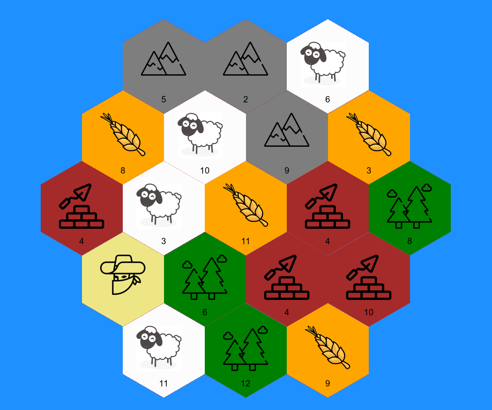

Settlers of Catan
Settlers of catan
In our living room there is an old chest hiding some real treasures. Every now and again we will get Settlers of Catan out. I never grow tired of playing it as the board changes every time. The game has 19 hexagon shaped tiles that are placed at random. Eighteen tiles are linked to different resources -wheat, rock, wood, sheep and clay- and the 19th is the desert where the much feared robber lives. Each tile is assigned a number bewteen 1 and 12 at random and when that number is rolled you get to pick up a card linked to the resources of that tile. You can use your resources to build settlement, cities and roads.
Getting the tiles
As an R user and a massive Settler of Catan fan (I used to play in the morning before going to work) I had been thinking about how to combine the two. I decided that I wanted to create a random board generator. However, just getting a static version of the catan board took me a while so I decided to split this into two blog posts. In the future I will put this into a shiny app so that the board can be generated randomly,
I know that the board is created randomly when you play Catan the regular way but I just think that adding R to it just makes it more fun.
I tried a few different ways of creating the board. My first attempt was to create the edge points and use geom_polygon from ggplot2 to plot them. It turned out that figuring out where those points should be was trickier than I thought and I gave up. After that I tried plotting hexagons using spsample and I played with the hexbin package but I couldn’t get it to work (most likely because I didn’t do enough reading, not because it can’t be done).
I finally got it to work after reading Maëlle Salmon’s blog post about plotting hexagon stickers using magick.
First sticker/hexagon
I downloaded the hexagon stickers from the hexbin github repository and used the one with the fewest colours as a base. This happened to be a sticker called rangle.
The rangle sticker only has two colours so it is quite easy to make it only one colour using image_fill.
setwd("/Users/emmavestesson/Documents/GitHub/bdown/")
hex_base <- magick::image_read(here::here("rangle.png")) %>%
image_fill("white", point = "+100+100", fuzz = 20) %>%
image_fill("white", point = "+100+200", fuzz = 20)
image_write(hex_base, here("catan hexes/hex_base.png"))I now have my template hexagon. I downloaded some icons to illustrate the different resources. The icons were quite large so I started by trimming the image and the rescaling it. Once the icon is small enough I combine the tile and the icon. The code is the same for all the tile so I have only included the code for the wheat tile.
setwd("/Users/emmavestesson/Documents/GitHub/bdown/")
# wheat
wheat_tile <- hex_base %>%
image_fill("orange", point = "+100+100", fuzz = 20)
wheat_img <- image_read("~/Documents/R folder/Icons_catan/wheat.png")
wheat_img <- image_trim(wheat_img)
wheat_img <- image_crop(wheat_img, geometry_area(1088, 1100, 0,0), repage = FALSE) %>%
image_scale(100)
wheat <- image_composite(wheat_tile, wheat_img, offset = "+40+50") %>%
magick::image_write(here("catan hexes/wheat.png"))Not all resources appear the same number of times so I create a vector with links to image and repeat some of them four times and some three times. I then go on to shuffling the tiles to add the random component and then I read the images.
setwd("/Users/emmavestesson/Documents/GitHub/bdown/")
tiles <- c(rep("catan hexes/wood.png",4), rep("catan hexes/sheep.png",4), rep("catan hexes/wheat.png",4), rep("catan hexes/clay.png" ,3), rep("catan hexes/rock.png",3), "catan hexes/desert.png" )
tiles <- sample(tiles) # change the order at random
read_append <- . %>%
magick::image_read() %>%
magick::image_append()
tiles_image <- map(tiles, read_append)
number_tiles <- c("5", "2", "6", "3", "8", "10", "9","12","11","4", "8","10","9", "4", "5", "6", "3", "11" )The vector number_tiles holds the numbers that should go on the tiles. In real life the tiles are shuffled and placed on the table in a certain order, starting from the top and moving around in a circle until you get to the middle. After that you place one number on each tile skipping the desert. This skipping the desert tile created a bit of a problem. The desert tile should not get a tile so I need to find out where the desert tile is and then add a blank space at that point in the number_tiles vector before adding the number to tiles using image_annotate..
desert_loc <- grep("catan hexes/desert.png", tiles, ignore.case = FALSE, perl = FALSE, value = FALSE,
fixed = FALSE, useBytes = FALSE, invert = FALSE)
number_tiles <- append(number_tiles, " ", after = desert_loc-1)
tiles_with_prob <- map2(tiles_image, number_tiles, ~image_annotate(.x,paste(.y), gravity = "south", location = "+0+20",
degrees = 0, size = 19)) Time to combine all the tiles! This code is very long and repetitive because I need to put down the tiles in a certain order. In my first attempt using hex stickers I created five rows of hexagons and then combined them but then the numbers were wrong as you need to skip a number when the desert tile is plotted.
info <- tiles_with_prob[[1]] %>%
magick::image_info()
height <- info$height
width <- info$width
board <- magick::image_blank(width = width * 6,
height = width * 5 ,
col = "dodgerblue1")
info_board <- image_info(board)
y_adj <- height/5
x_adj <- -width/2
board0 <- image_composite(board,tiles_with_prob[[1]], offset=paste0("+", 2*width + x_adj, "+", 0 + y_adj) )
board1 <- image_composite(board0,tiles_with_prob[[2]], offset=paste0("+", 3*width + x_adj, "+", 0 + y_adj))
board2 <- image_composite(board1,tiles_with_prob[[3]], offset=paste0("+", 4*width + x_adj, "+", 0 + y_adj))
board3 <- image_composite(board2,tiles_with_prob[[4]], offset=paste0("+", 4.5*width + x_adj, "+", height*0.75 + y_adj))
board4 <- image_composite(board3,tiles_with_prob[[5]], offset=paste0("+", 5*width + x_adj, "+", 2*height*0.75 + y_adj))
board5 <- image_composite(board4,tiles_with_prob[[6]], offset=paste0("+", 4.5*width + x_adj, "+", 3*height*0.75 + y_adj))
board6 <- image_composite(board5,tiles_with_prob[[7]], offset=paste0("+", 4*width + x_adj, "+", 4*height*0.75 + y_adj))
board7 <- image_composite(board6,tiles_with_prob[[8]], offset=paste0("+", 3*width + x_adj, "+", 4*height*0.75 + y_adj))
board8 <- image_composite(board7,tiles_with_prob[[9]], offset=paste0("+", 2*width + x_adj, "+", 4*height*0.75 + y_adj))
board9 <- image_composite(board8,tiles_with_prob[[10]], offset=paste0("+", 1.5*width + x_adj, "+", 3*height*0.75 + y_adj))
board10 <- image_composite(board9,tiles_with_prob[[11]], offset=paste0("+", 1*width + x_adj, "+", 2*height*0.75 + y_adj))
board11 <- image_composite(board10,tiles_with_prob[[12]], offset=paste0("+", 1.5*width + x_adj, "+", 1*height*0.75 + y_adj))
board12 <- image_composite(board11,tiles_with_prob[[13]], offset=paste0("+", 2.5*width + x_adj, "+", 1*height*0.75 + y_adj))
board13 <- image_composite(board12,tiles_with_prob[[14]], offset=paste0("+", 3.5*width + x_adj, "+", 1*height*0.75 + y_adj))
board14 <- image_composite(board13,tiles_with_prob[[15]], offset=paste0("+", 4*width + x_adj, "+", 2*height*0.75 + y_adj))
board15 <- image_composite(board14,tiles_with_prob[[15]], offset=paste0("+", 3.5*width + x_adj, "+", 3*height*0.75 + y_adj))
board16 <- image_composite(board15,tiles_with_prob[[17]], offset=paste0("+", 2.5*width + x_adj, "+", 3*height*0.75 + y_adj))
board17 <- image_composite(board16,tiles_with_prob[[18]], offset=paste0("+", 2*width + x_adj, "+", 2*height*0.75 + y_adj))
board18 <- image_composite(board17,tiles_with_prob[[19]], offset=paste0("+", 3*width + x_adj, "+", 2*height*0.75 + y_adj))
board_gif<- image_animate(c(board0, board1, board2, board3, board4, board5, board6, board7, board8,
board9, board10,board11, board12, board13, board14, board15, board16, board17, board18), fps=1)
image_write(board18, "~/Documents/GitHub/bdown/public/2018/03/settlers-of-catan/catan_board.png")
image_write(board_gif, "~/Documents/GitHub/bdown/public/board_gif.gif")Here is a gif showing the order that the tiles are plotted. I uploaded the gif to my blog to include because I couldn’t figure out how to include it from disk without installing additional things.
 Static image!
Static image!
 ser ## Notes
I used the vembedr package to include the short video of my friend.
Packages I used
library("magrittr")
library("purrr")
library("fs")
library("magick")
library("here")
library("htmltools")
library("vembedr")